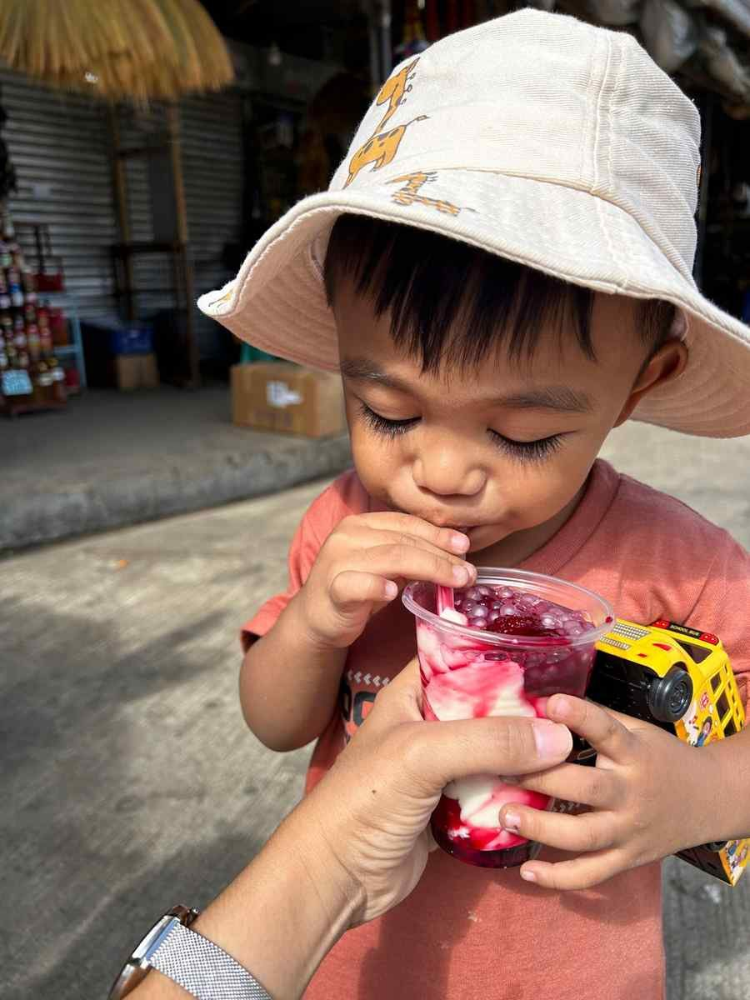
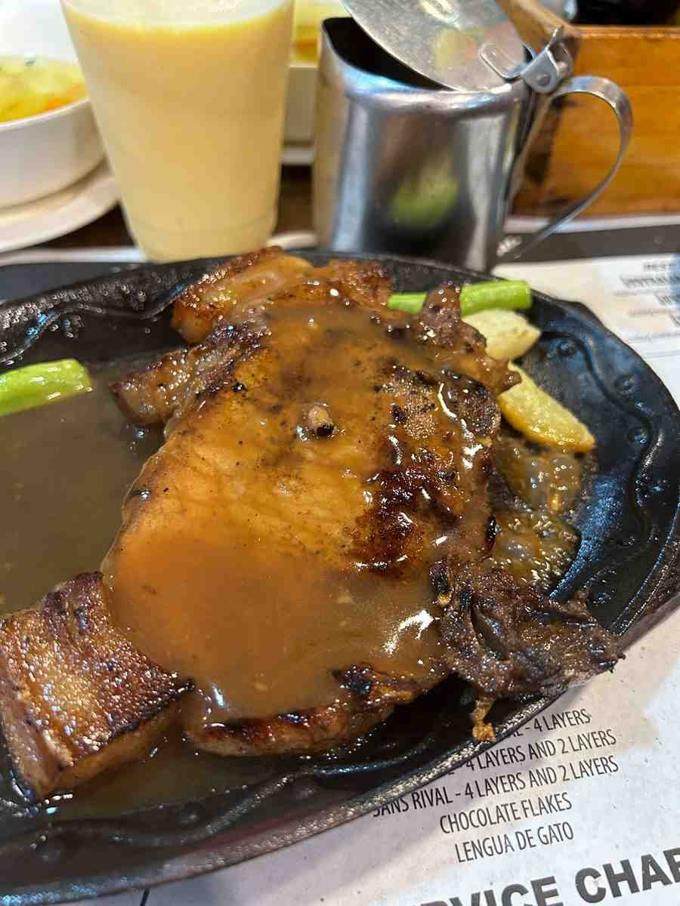
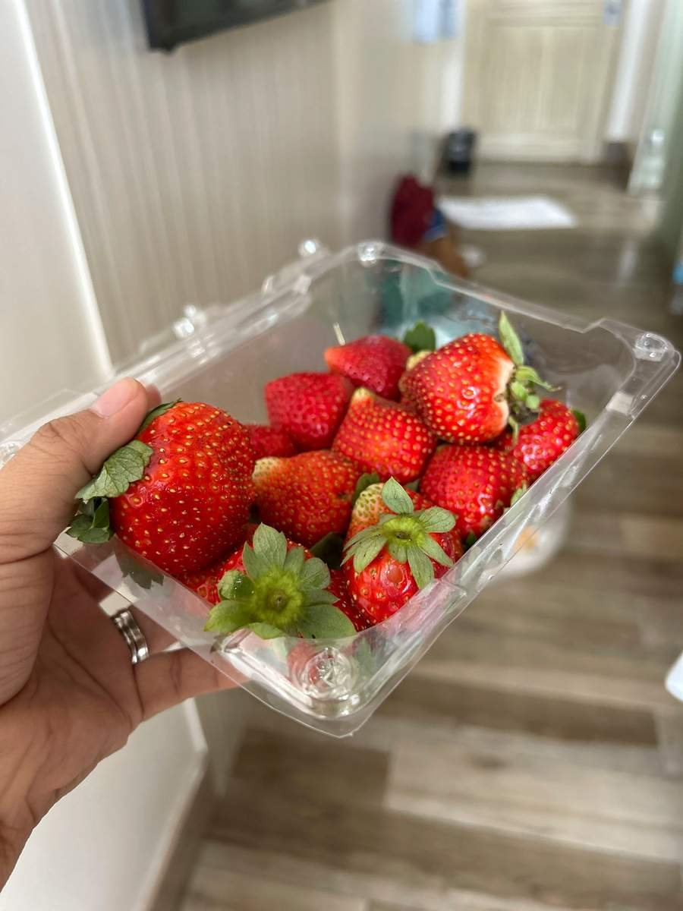
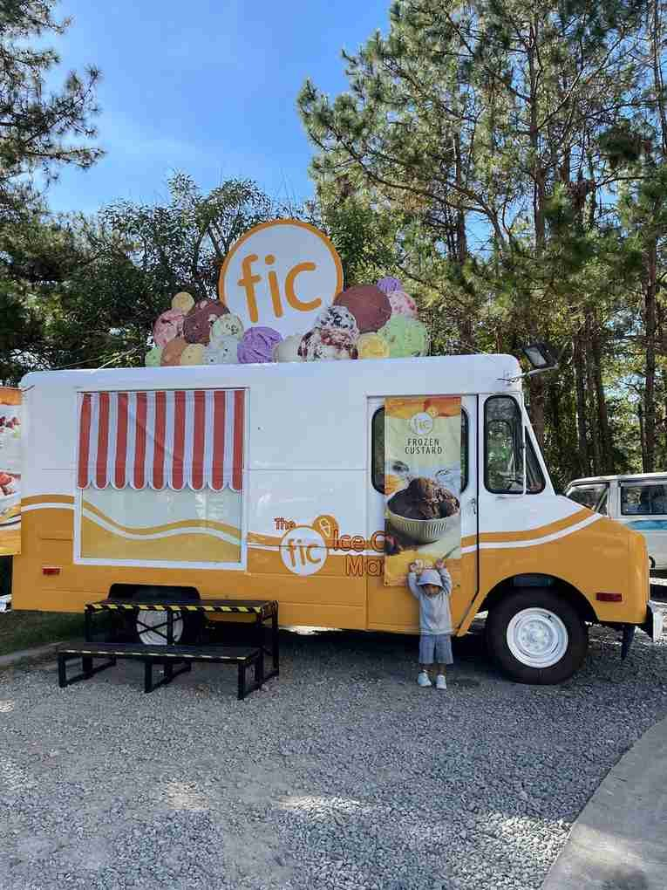
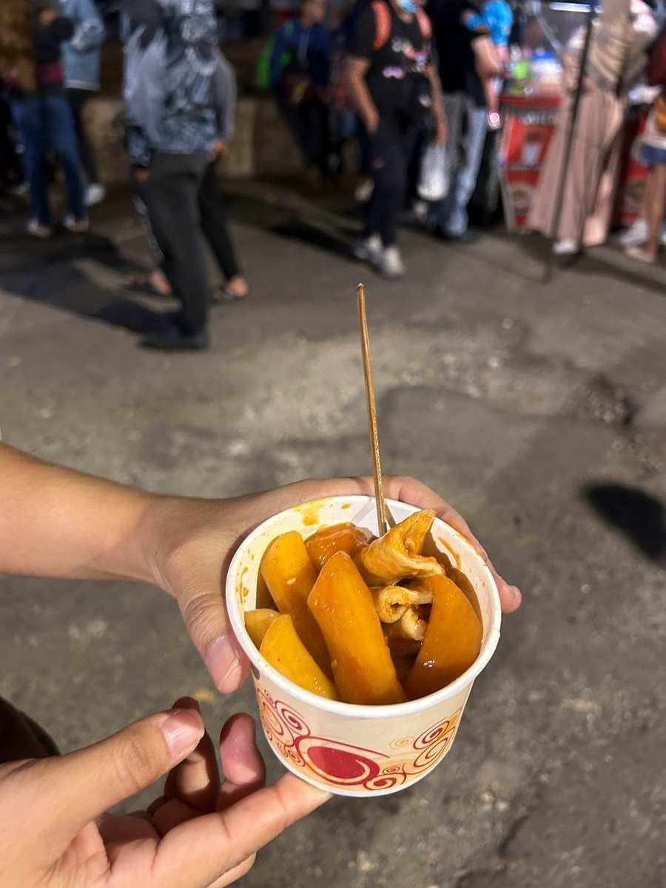

Eating well in Baguio is less about one famous restaurant and more about knowing what the city does best: strawberry taho from a street vendor, cheap, generous plates at old family restaurants, Cordillera dishes such as pinikpikan, warm snacks at the night market, and jam made by nuns for pasalubong. Most of it is cheap, much of it is eaten standing up, and a lot of it tastes better because the air is cold.
This guide is organised the way locals tend to eat through a day, from a sweet cup of taho in the morning to a late snack on Harrison Road. It covers the dishes worth looking for, the long-running places people keep returning to, and a few habits that make eating in a crowded tourist city less stressful.
One general tip before you start: Baguio restaurants fill up fast on weekends and holidays, and queues at the best-known places can take longer than the meal. Eat a little earlier or later than everyone else, and keep a second option nearby.

Start With Strawberry Taho
Taho is sold all over the Philippines: warm silken tofu with brown sugar syrup and sago pearls. Baguio's version swaps the usual syrup for strawberry syrup, often with bits of fruit, and it has become one of the city's signature snacks. Vendors carry it in metal containers around Burnham Park, Mines View, Session Road and other places where visitors gather, and a cup costs very little.
It is best in the morning, when the taho is still warm and the air is cool. Children tend to love it, and it makes an easy breakfast on the move.

Comfort Food Locals Keep Going Back To
Good Taste is the classic answer when someone asks where Baguio people eat. It is a large, busy Filipino-Chinese restaurant known for big portions at low prices, especially its buttered chicken, fried rice and noodle dishes, and it keeps long hours. Expect a queue at peak times, and order family style if you are in a group, since the plates are made for sharing.
Sizzling plates are another Baguio habit. A pork chop or steak on a hot iron plate with gravy, rice and a few vegetables suits the cold weather perfectly, and many of the city's older restaurants and diners serve some version of it. It is filling, simple and usually reasonably priced.

Vizco's on Session Road is known for its strawberry shortcake and baked dishes, and it is a long-time stop for families. Oh My Gulay, on an upper floor of a building along Session Road, serves vegetarian dishes in a quirky, art-filled space, and it is a good choice when you want something lighter.
Cordillera Dishes to Try
Baguio sits in the Cordillera, and some of the most interesting food comes from the mountain communities around it. Pinikpikan is a chicken soup with a smoky flavour, traditionally tied to rituals and gatherings, and it is often cooked with etag, a salted and cured pork that gives dishes a deep, slightly funky taste. Farmer's Daughter, near Tam-awan Village, is one of the restaurants known for serving these dishes.
Try them with an open mind. These are dishes with cultural weight, not novelty items, and they are worth ordering at a place that cooks them regularly rather than as a token menu item.
Breakfast and Coffee
Café by the Ruins has been a Baguio institution for decades, known for its kamote bread, Filipino breakfast plates and Benguet coffee. For a cold morning, Choco-late de Batirol near Camp John Hay serves thick, traditional hot chocolate whisked in a wooden batirol, along with native rice cakes such as bibingka and suman.
Coffee is a big part of the city's culture. Beans from Benguet farms supply many local cafés, and our Philippine coffee trail explains where they come from and what makes them different.
Strawberries and Sweet Things
Strawberries are grown in La Trinidad, just outside Baguio, and they turn up everywhere: in jams, shakes, taho, cakes and in plastic tubs at the public market and roadside stalls. They are at their best and cheapest during the cool months, roughly from late in the year into the first months of the next.

Ice cream and frozen desserts are popular despite the cold, especially on sunny afternoons around Camp John Hay and the parks, where food trucks and kiosks set up under the pine trees.

Night Market Snacks
The Harrison Road night market is mainly about clothes, but it also has food stalls selling skewers, warm drinks and small snacks such as spicy rice cakes. Treat it as a snack stop rather than dinner, and eat properly beforehand. Our Baguio Night Market guide covers hours and how to get the most out of it.

Pasalubong: What to Bring Home
Good Shepherd's ube jam is the best-known Baguio pasalubong. It is made at the Mountain Maid Training Center, run by the Sisters of the Good Shepherd near Mines View Park, and sales have helped fund the education of young people from the Cordillera since 1952. The shop also sells strawberry jam, peanut brittle, lengua de gato and cookies. Buy at the convent shop if you can, since resellers in the city and online charge noticeably more, and go early on weekends, because popular items can sell out.
Other common choices include strawberry jam, peanut brittle, Benguet coffee beans and fresh vegetables from the public market.
Tips for Eating Well in Baguio
- Eat off-peak. Lunch at 11 and dinner before 6 can save you an hour in line on busy days.
- Carry cash. Street vendors and smaller eateries often do not take cards.
- Walk between meals. Session Road, Burnham Park and the market area are close together, and traffic can make short taxi rides slow.
- Check opening hours before going out of your way, especially on holidays.
Planning Your Food Trip
Two or three days is enough to work through most of the city's food highlights at a relaxed pace. If you are coming from Manila, our guide to taking the bus from Manila to Baguio covers routes and fares, and an overnight bus puts you in the city just in time for a warm cup of strawberry taho.


Comments
No comments yet. Been here recently? Share a tip or ask a question.
Leave a Reply